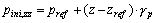
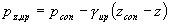
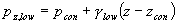
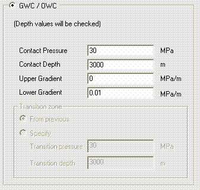
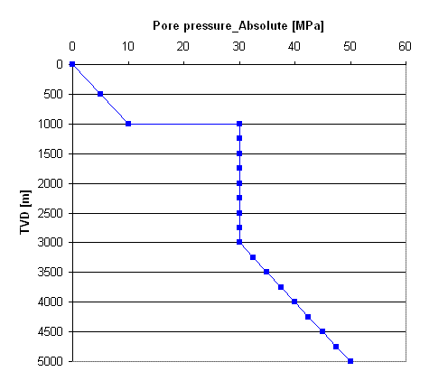
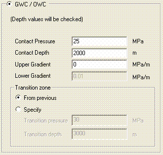
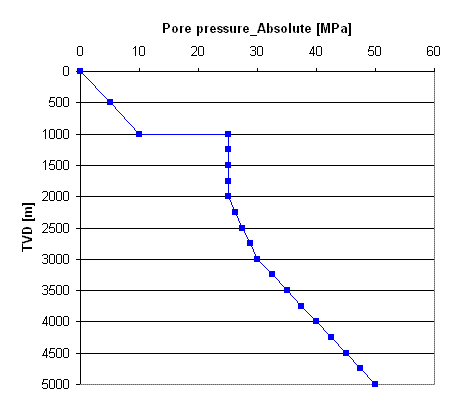
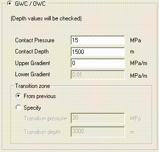
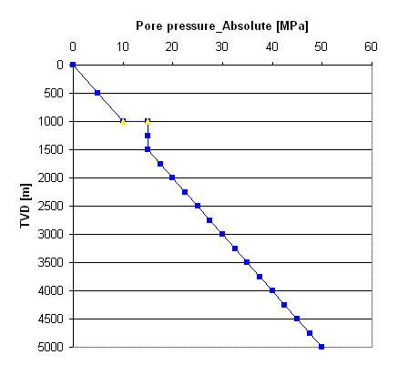

The pressure attributes dialog appears by right-clicking on a Depletion stage in the pressure branch in the model tree.
All pressures in all formations in the Initial stage are by default equal to the "Global Pore Pressure", as input under the "Global pore pressure" branch.
For each formation and depletion stage which differs from these values (initially or during the depletion) a new pressure needs to be defined.
The pressure attributes provides information about these pressures:
|
Depletion stage |
Name of the depletion stage |
|
Formation |
Name of the formation |
There are four
pressure definition options. Activate one of these options:
These pressure definitions are described below.
The pressure can be
defined with a distributed quantity ‘pressure’ via a point- or elementset (see one of the
options above). There are two options to define the value outside this
distributed value:
|
Predefine
pressure value |
The pressure
outside the distribution equals the global pore
pressure value for the initial stage and same as previous depletion stage
for all other depletion stages. |
|
Extrapolated
pressure value |
The pressure
outside the distribution equals the extrapolated
pressure value of the distributed value. |
A change in pressure
definition between two subsequent depletion stages is considered to be depletion
and the formation is assumed to be a reservoir. The icon of the formation in the
formation branch changes from a formation icon into a reservoir icon.
The global pore pressure definition is used to calculate an
initial pressure situation (initial stage). Use
Global pore pressure to define the global pore pressure.
Each (subsequent) depletion stage is (by default) taken to be equal to the previous pressure definition, which is the initial pressure for the first depletion step.
Each (subsequent) depletion stage is default taken to be equal to the previous pressure definition. Therefore this definition can only be applied for depletion stages (not for the initial stage).
Distributed values can be imported as a point- or elementset or created within the Pointset attributes dialog via the RPN-calculator. After the distributed pressure is imported or created, it can be dragged onto a pressure leaf in the pressure branch in a formation branch in the model tree. This option can only be selected if the pressure file is imported and assigned as pressure file, in which case the pressure file will be visible in a selection box at the bottom.
A single value
pressure definition is calculated from the following three parameters:
|
Reference
pressure |
Reference pressure (=pref see formula below) |
|
Reference depth |
Reference depth where the reference pressure holds (=zref
see formula below). |
|
Gradient |
Pore pressure
gradient (=gpsee formula
below) |
The pore pressure at
a certain depth z is calculated using the following formula:

With
| pini,zz | pressure at certain depth z (Mpa) |
| z | z-coordinate |
| zref | z-coordinate of
reference depth |
| gp | stress gradient of pore pressure |
| pref | reference pore
pressure |
By defining a
gas-water contact or an oil-water contact (GWC/OWC) the changes in pressure in the reservoir
can be simulated more precisely. The pressures are calculated from the following four
parameters:
Contact pressure Pressure at the gas-water or oil-water contact.
Contact depth Contact depth where the contact pressure holds. The contact depth must be inside the formation.
Upper
Gradient Pore
pressure gradient above the contact
Lower Gradient Pore pressure gradient below the contact.
The pore pressures
are calculated using the following formula:

for the pressure above the contact depth and

for the pressure below the contact depth.
With
| pz,up | pressure above contact depth. (Mpa) |
| pz,low | pressure below contact depth. (MPa) |
| z | z-coordinate |
| zcon | z-coordinate at
contact depth |
| gup | pressure gradient above contact depth (MPa/m), ie for instance 0.008 MPa/m for oil or 0.002 MPa/m for (pressurized) gas |
| glow | pressure gradient below contact depth (MPa/m), ie for instance 0.012 MPa/m for brine |
| pcon | pressure at contact depth. {MPa) |
Transition zone is only available in depletion. There are two option to specify the pressure in more detail:
| From previous |
|
| Specify | Define an extra contact pressure with location |
In the next example this option is explained in more detail.
 initial stage |
 |
 Depletion stage 1 |
 |
 Depletion stage 2 |
 |